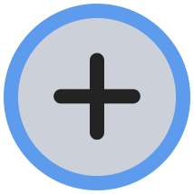
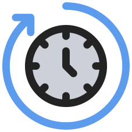

<ion-header>
  <ion-toolbar>
    <ion-buttons slot="start">
      <ion-menu-button></ion-menu-button>
      <ion-back-button></ion-back-button>
    </ion-buttons>
    <ion-title>Deliveries</ion-title>
  </ion-toolbar>
</ion-header>

<ion-content color="light">
  <ion-grid>
    <ion-row>
      <ion-col [routerDirection]="'forward'" [routerLink]="['/deliveries/start-new-deliveries']">
        <div class="col-inner-conatiner padding">
          
          <div class="text">Start New Deliveries</div>
        </div>
      </ion-col>

      <ion-col [routerDirection]="'forward'" [routerLink]="['/deliveries/view-past-deliveries']">
        <div class="col-inner-conatiner padding">
          
          <div class="text">View My Past Deliveries</div>
        </div>
      </ion-col>
    </ion-row>
  </ion-grid>
</ion-content>
